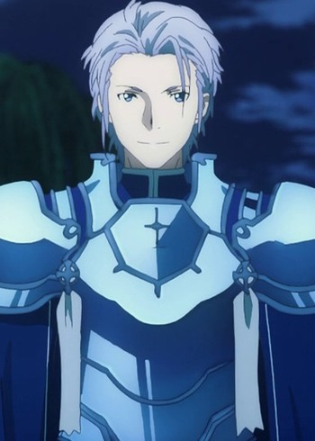

Takeaki Masuyama is a Japanese voice actor. He is affiliated with Ken Production.
- Gender: Male
- Birthday: April 14, 1989
- Hometown: Okinawa, Japan
- Skill: Nippon Kempo

|
|---|
|
Takeaki Masuyama is a Japanese voice actor. He is affiliated with Ken Production.
|
|---|
|  | Eldrie Woolsburg |
|
Eldrie Woolsburg is a knight who became an Integrity Knight after winning the Four Empires Unity Tournament. |
Go Back to Main Page |
Go Back to Homepage |
|
|
|
OR |
|